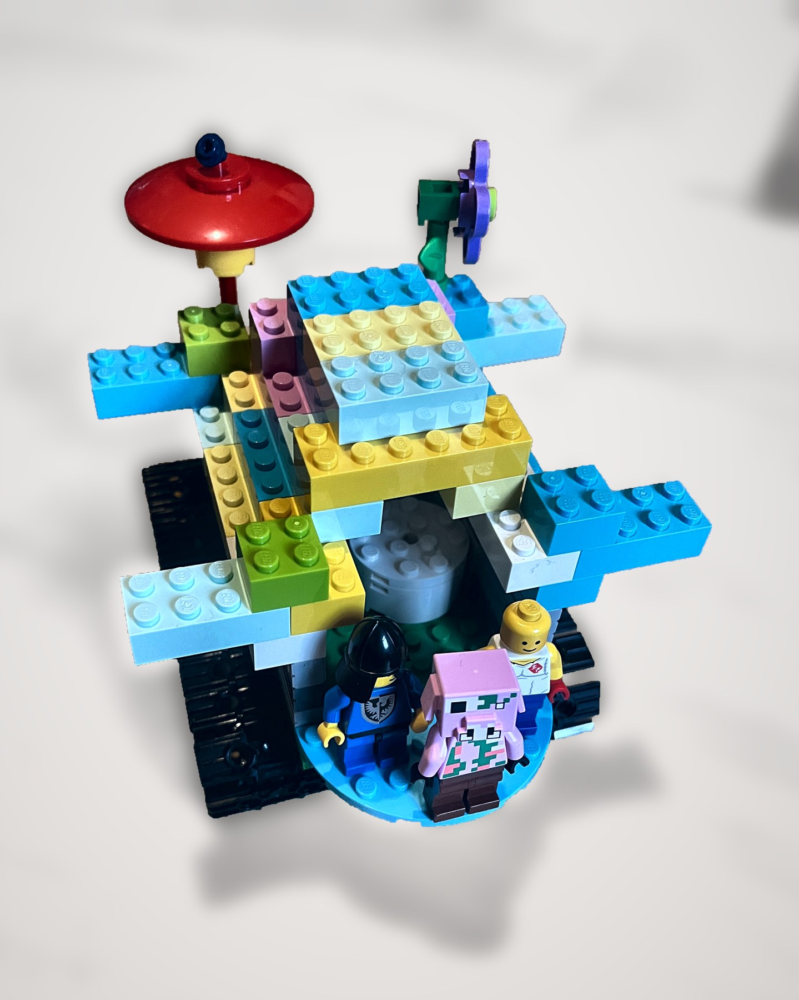
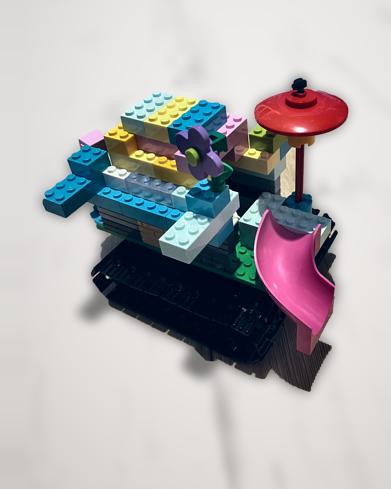
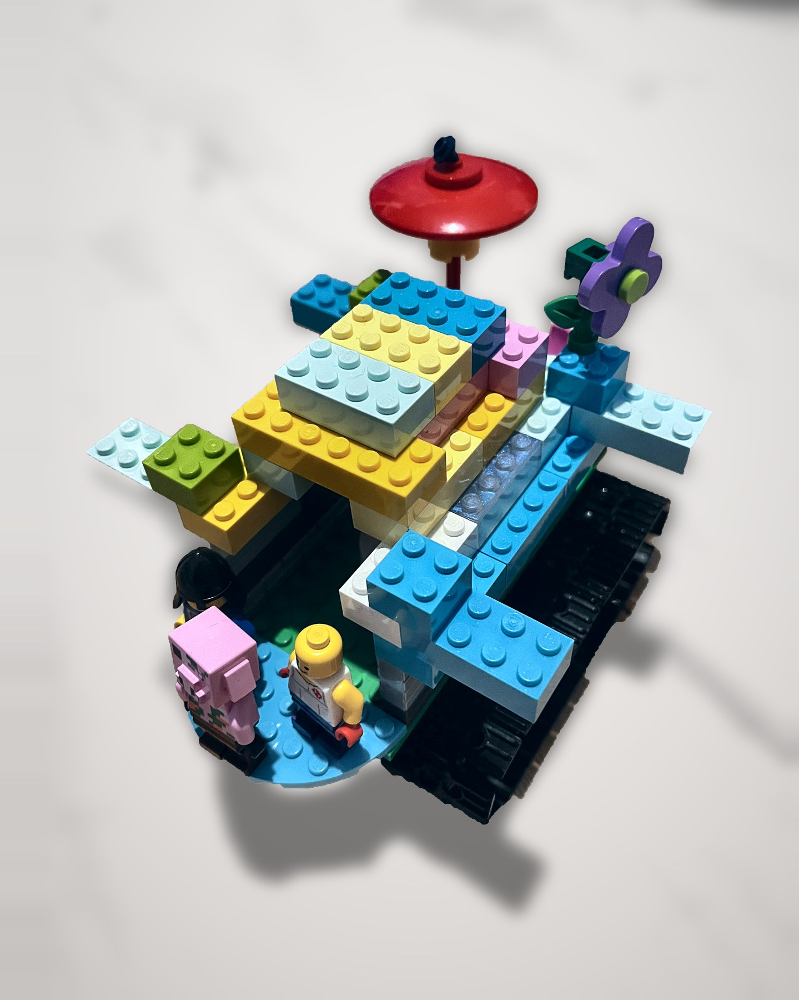
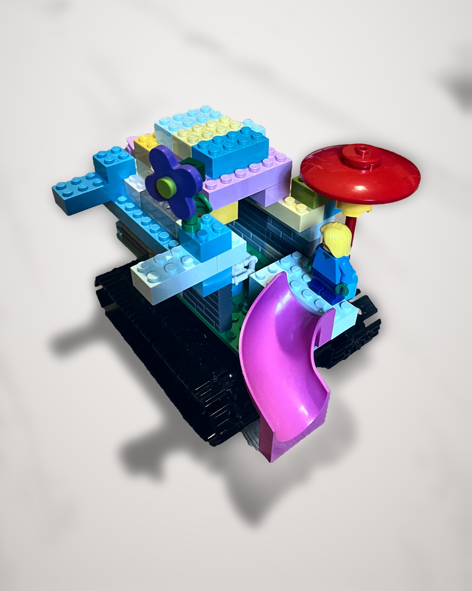
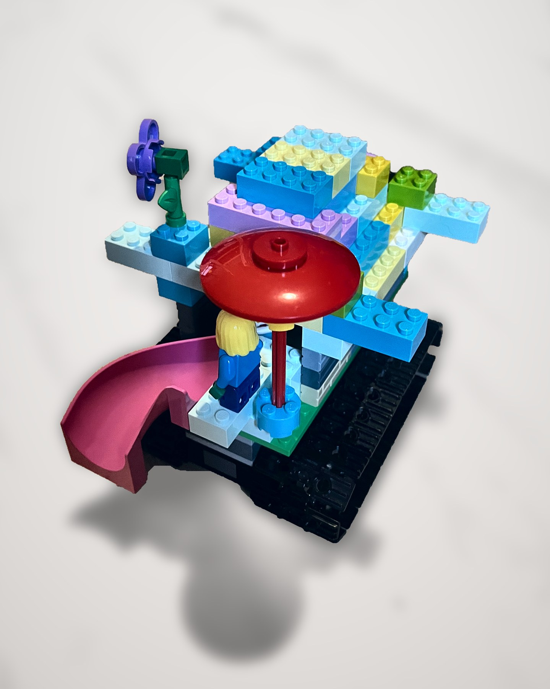
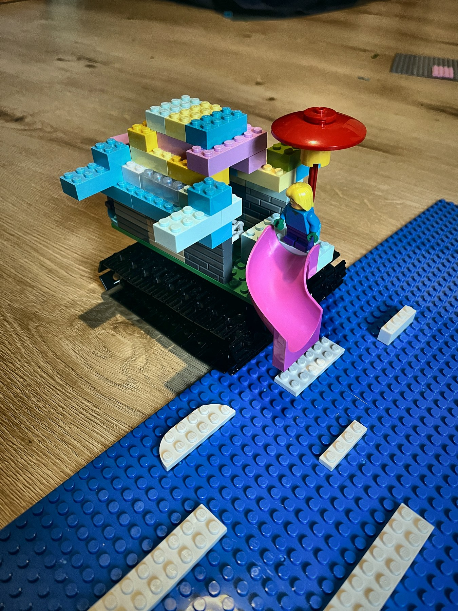
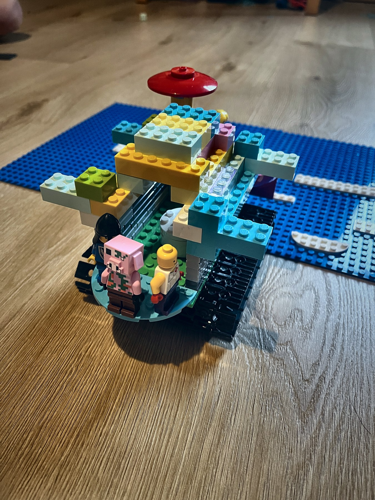
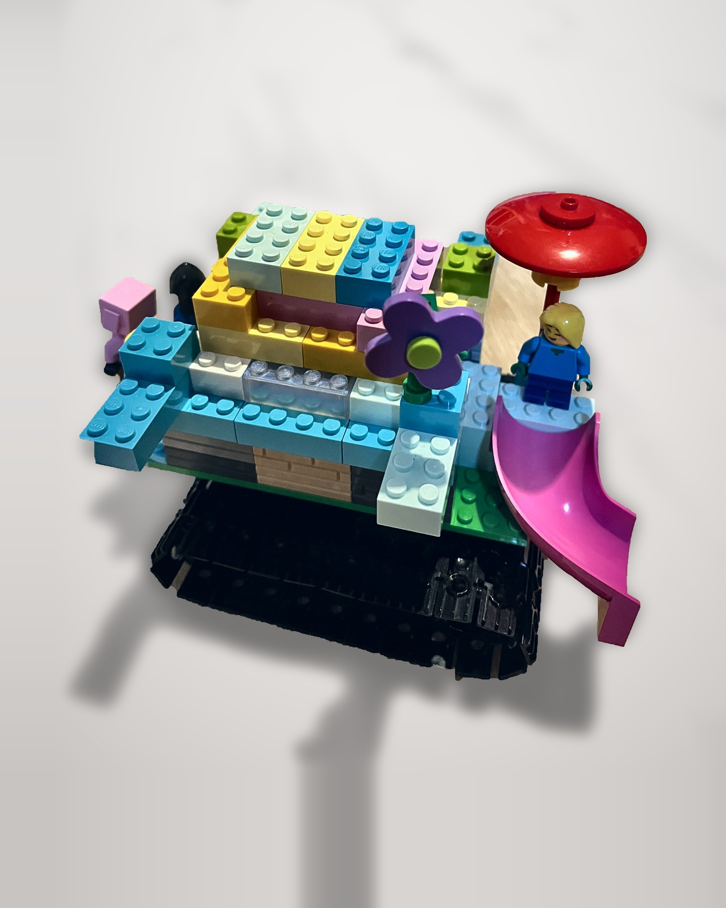

First I drew it on paper. Then I built it in LEGO. It drives itself down to the sea, and it has a party on top.

1Caterpillar tracksInstead of wheels and a horse, it drives itself over the sand and into the sea.
2A stage for a rock bandA round stage at the front, under the roof, so the band stays dry.
3Water fountainsAt the top sides, to spray water and cool everybody down on a hot day.
4A slide with a shadeClimb up under the parasol and slide down into the sea.

Tracks

The stage

Fountains

The slide

Sliding into the sea

The band on stage

The side, with the flower